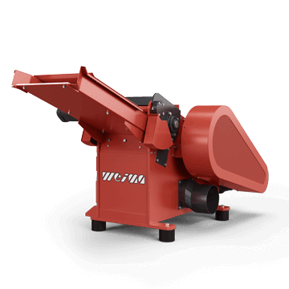
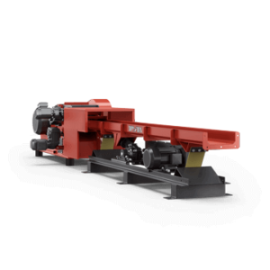

01
- Choose Language
Horizontal shredder with beveled manual infeed
The biggest difference between classic shredders and horizontal shredders is the material infeed. Instead of a hydraulic ram, a beveled manual feed is used - with a decisive advantage: It is ideal for feeding particularly long waste such as strips, battens, squared timber, profiles, pipe material, or other linear waste. While horizontal shredders are usually placed next to the machine and can be fed manually, they come with everything necessary for fully automated production operation. They are extremely compact and robustly built. These machines are equipped for easy integration thanks to state-of-the-art data interfaces, and they are very user-friendly to maintain.
The Siemens PLC control system installed in the separate control cabinet regulates all processes of a horizontal shredder and can be individually configured for each application. This guarantees consistently high-quality throughput material of homogeneous size - ideal for further processing. If required, horizontal shredders can of course also be integrated into a fully automatic production line.
An electromechanical drive with V-belt is used to drive the V rotor installed inside the machine. It can be maintained in a user-friendly manner and is characterized by its proven technology combined with high throughput. The absence of a gearbox or clutch also ensures low wear.
ReduceAll horizontal shredders are not only particularly compact, but above all, robustly built. Rotor bearings that are offset from the machine frame are insensitive to dust, easy to maintain and durable.
Screwed underneath the rotor is a round hole screen, which can be replaced as required by a screen with a larger or smaller hole diameter in the range 10 - 80 mm. Material is shredded by the rotor until it fits through the hole openings, falls through, and is finally suctioned off. This guarantees a particularly homogeneous material for each individual requirement.
The cutting geometry of a shredder has a significant influence on the shredding result and the output quantity. ReduceAll horizontal shredders are optimally equipped due to the aggressive, controlled material intake by means of an infeed roller and the use of two rows of rotor knives. Thus, a high throughput is achievable even with comparatively low power requirements. Wear on the cutting knives is minimal. If necessary, they can be turned and replaced.
The material can be discharged from the side or rear of the machine, as required. As a rule, the shredded material is extracted via a suction nozzle and transported to a central silo. However, a screw auger can also be used as an option. Thanks to the closed system, dust emission is particularly low, which reduces the risk of explosion.
In many day-to-day activities, scraps or offcuts of wood or plastic accumulate directly at the workstation. This is also the case, for example, with panel or sliding table saws. Instead of collecting them separately and transporting them away, we recommend placing a horizontal shredder directly next to the machine. Waste can then be disposed of immediately and without additional effort.
|  |  | |||
Beaver 400 |
WLH 300 |
WLH 400 |
WLH 600 |
|
| Rotor Diameter (mm) | 260 | 260 | 260 | 370 |
| Rotor length (mm) | 400 | |||
| Power (kW) | 15 | 18.5 | 15 | 18.5 | 20 | 22 | 30 |
| Rotor Knives | 18 | 14 | 18 | 32 |
| Connection Diameter (mm) | 200 | |||
| Infeed opening (mm) | 400 x 40 | 300 x 700 | 400 x 70 | 600 x 70 |
| Length (mm) | 2,180 | 2,350 | 2,350 | 2,350 |
| Width (mm) | 1,185 | 1,100*1 | 1,250*2 | 1,300*1 | 1,450*2 | 1,500*1 | 1,650*2 |
| Height (mm) | 1,085 | 800 | 800 | 800 |
| Weight (approx. kg) | 1,000 | 900 | 1,100 | 1,300 |
| *1 Width with one infeed roller *2 Width with one infeed roller | *1 Width with one infeed roller *2 Width with one infeed roller | *1 Width with one infeed roller *2 Width with one infeed roller |